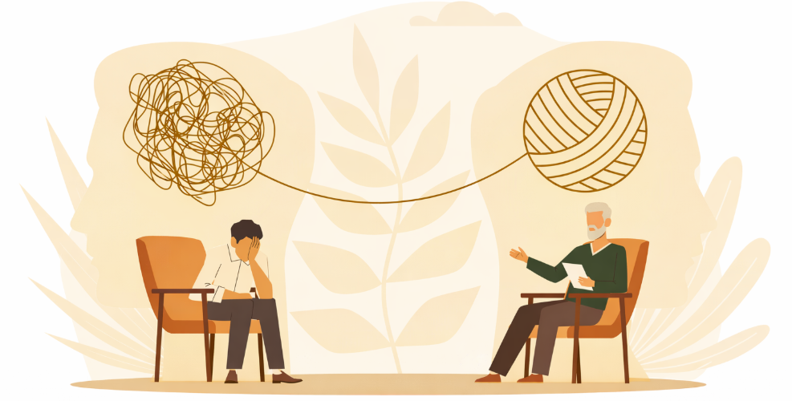

Trauma
It is possible to feel safe again—in your body and your mind. Are you feeling stuck in survival mode? Trauma can leave you constantly on edge, disconnected, or overwhelmed. Healing is possible. Together, we can help you regain a sense of safety, process painful experiences, and reduce the impact of triggers on your daily life. You don’t have to keep living with nightmares, flashbacks, avoidance, insomnia, mood swings, isolation, distrust, or the constant cycle of negative thoughts. There is a path toward rest and restoration.
Main Interventions: EMDR, Trauma-Focused CBT (TF-CBT), Narrative Therapy
- Post-Traumatic Stress Disorder (PTSD)
- Adjustment Disorder (with anxiety or depression)
- Acute Stress Disorder
- Childhood trauma
- Attachment trauma
- Medical trauma
Anxiety
We can learn to slow down, be present, and feel more at ease. It may feel like anxiety is just part of who you are—but it doesn’t have to stay that way. Anxiety is something that can be understood, managed, and reduced. Just as it can be learned, it can also be unlearned. Together, we’ll build practical tools to help you feel more grounded, present, and in control so daily life feels more manageable.
Main Interventions: Cognitive Behavioral Therapy (CBT), Exposure Therapy, Mindfulness-Based Approaches, Somatic Awareness
- Generalized Anxiety Disorder
- Social Anxiety Disorder
- Panic Attacks
- Separation Anxiety
- Specific Phobias
- Stress related to life transitions (e.g., parenthood, career changes, college, relocation, building community)
Depression
When we celebrate small wins, we begin to see big change. You may feel alone, overwhelmed, or stuck—like even simple tasks take more energy than you have. You might worry about others seeing your struggles or feel like you’re falling behind compared to everyone else. That inner critic can be relentless. But change doesn’t have to come from shame or pressure. Healing can come from compassion, support, and learning new ways to relate to yourself. Your life matters, and a more fulfilling, connected life is possible.
Main Interventions: CBT, Motivational Interviewing, Solution-Focused Therapy, Narrative Therapy, Acceptance & Commitment Therapy (ACT)
- Major Depressive Disorder
- Postpartum Depression
- Depression related to hormonal changes
- Self-esteem challenges
- Guilt, comparison, and self-criticism
- Feelings of isolation